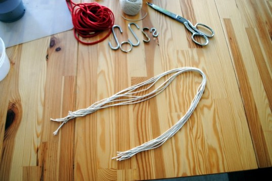
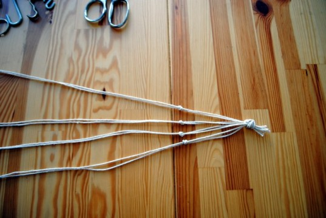
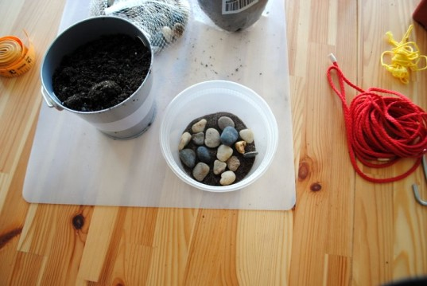
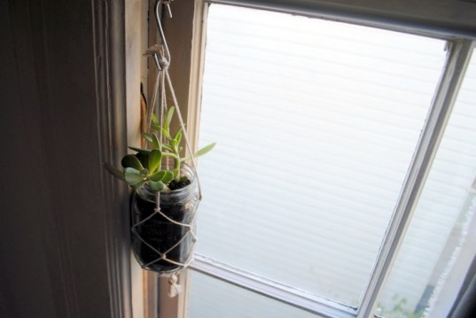

Instead of lugging your recyclables outside for collection this week, why not rummage through to gather materials for this unique hanging planter project? For this fun DIY decoration, you'll use string to knot a custom plant holder for a recycled container. Jam jars, plastic takeout containers, and yogurt cups can all be repurposed into a modern and functional hanging planter.
STEP 1: Gather your materials
- Recycled containers (glass jam or sauce jars, plastic takeout containers, or yogurt cups are ideal)
- String or twine (cotton, hemp, or nylon). We used basic cotton twine but you could punch it up with colored nylon string
- Plants (succulents and vines work well)
- Sand and/or pebbles for plant drainage
- Potting soil
- Scissors

STEP 2: Cut string
Cut twine or string into 8 equal lengths of approximately 24-34 inches (depending on how large your container is). Knot the ends.

STEP 3: Start knotting
Lay out the string on a flat surface and divide the 8 strings into 4 pairs. Knot each pair approximately 3 inches from the base. Take the two ends (left and right) and knot them as well to complete the circle.
STEP 4: Keep knotting
Keep creating a row of knots by repeating this step 2-4 inches above your first row of knot (depending on how wide your container is – wider containers will require a larger space). Do this by knotting together two strings from alternating rows so that your second row of knots consists of the opposite pair of strings (see picture). Remember to take the two spare ends and knot them together after each row to complete the circle.
STEP 5: Test the size
Test the size of your knotted plant hanger by draping it over your container. Then you can either add additional knots or finish the plant holder.

STEP 6: Planting
Plant your succulent, vine, cactus, or other plant. Start by adding a layer of sand and/or pebbles to the bottom of the container. This will promote healthy drainage for your plant since these containers do not have an open bottom. Cover the pebbles with a layer of potting soil and gently add your plant.

STEP 7: Hang your planter
Gently pull your new knotted string plant hanger up over your recycled container. The final step is knotting all 8 strands together at the top for hanging. Add a hook to hang from a window, shelf, or the ceiling.
Variations: You can adapt this plant holder method as creatively as you like. Try a large plant container. Try a tiny plant container. Try a rock or other natural object.